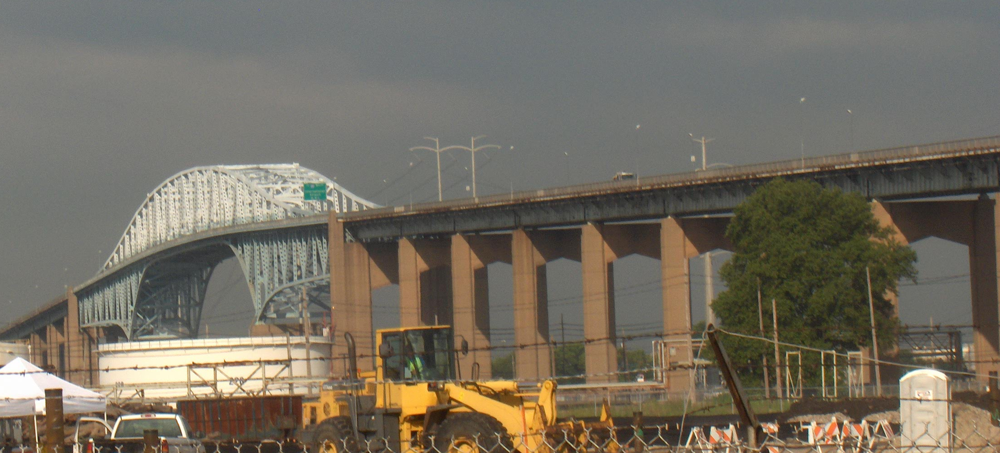
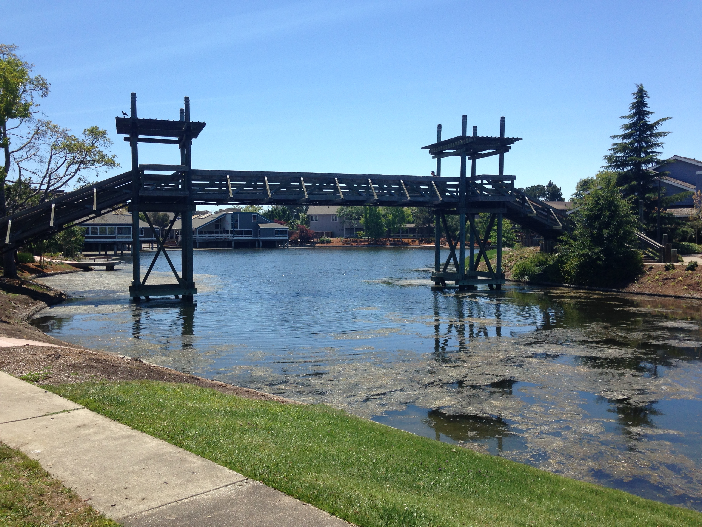
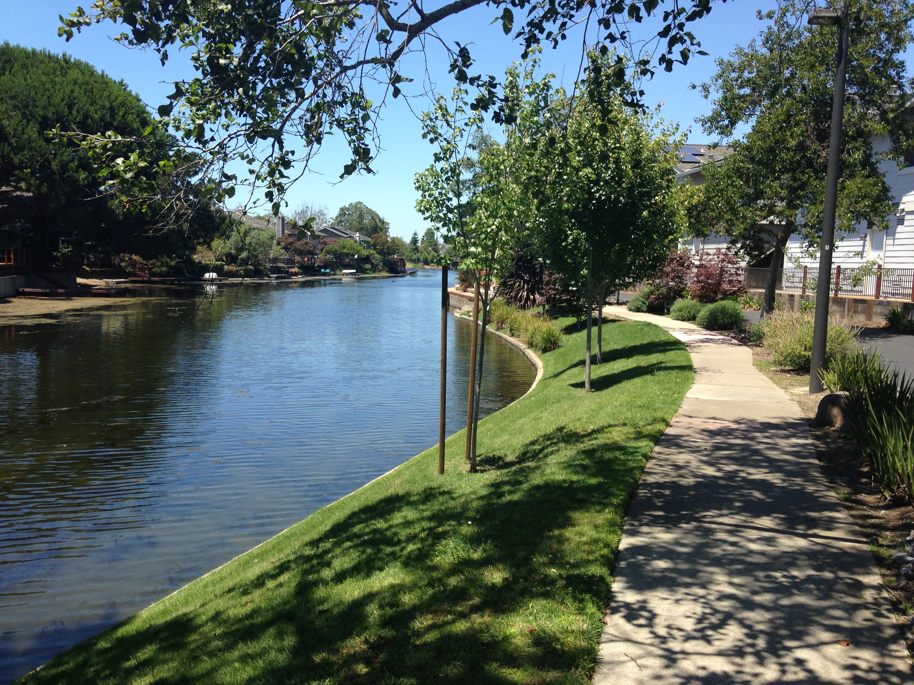
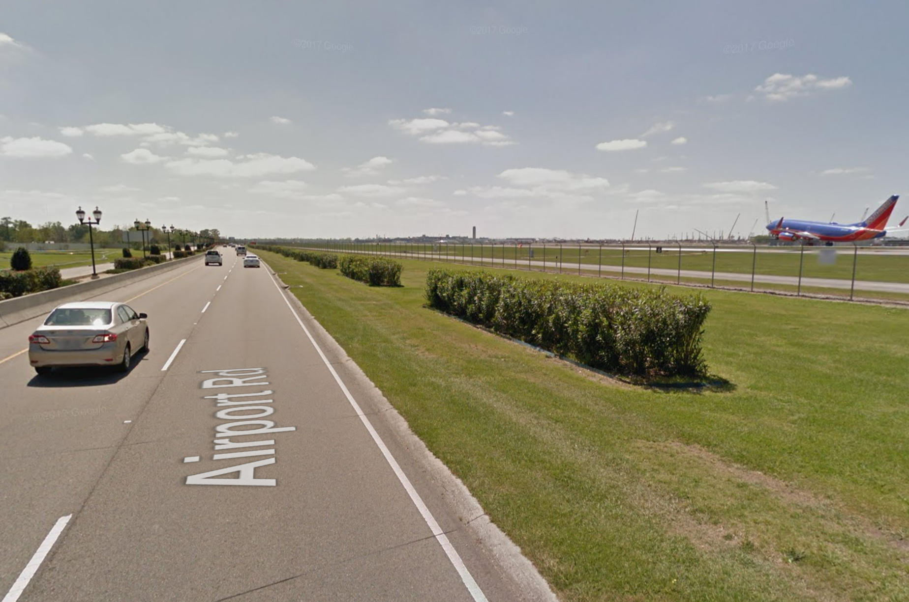
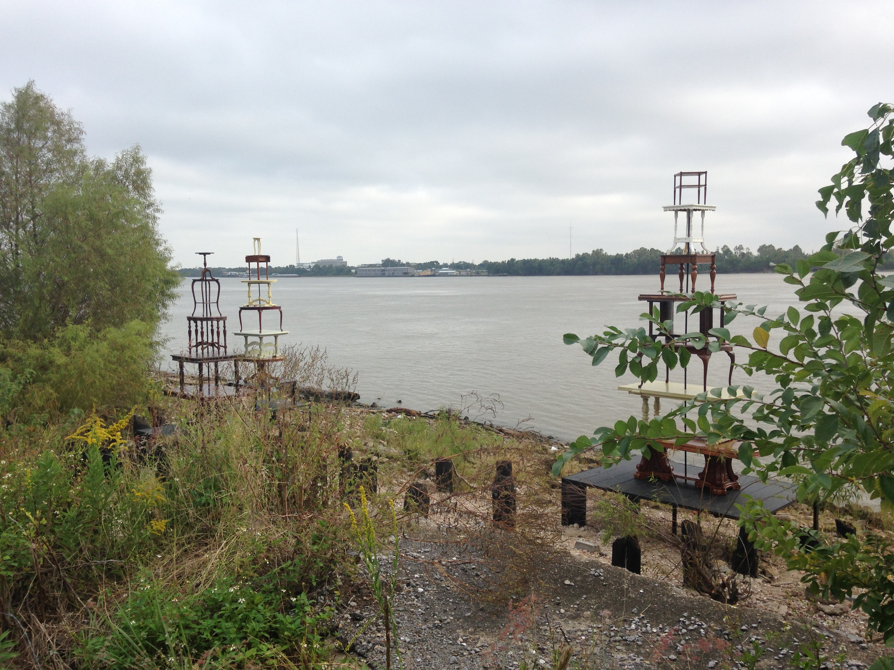

Airport Walking
Sat 18 August 2018
I like to walk places (a lot). I also prefer to avoid taking taxis or ridesharing services. At some point in college, I found myself at the Tweed New Haven airport at an odd hour, and decided to try my hand at walking downtown rather than taking a cab. I found that it was surprisingly pleasant, and the distance was not outlandish.
From then on I have had a quasi-hobby of walking to/from the various airports that I fly. The general goal is to go between the terminals and the downtown of whatever city the airport serves (though I will bend those rules if convenient). Sometimes the walk is fun, sometimes it is unpleasant, but it always takes me through different parts of the city than most visitors usually see.
Here are a few tips for having a successful airport walk:
- Keep the weather and time-of-day in mind.
- Travel with only a backpack as luggage.
- Usually the most dangerous part is the road network around the airport itself.
- If you walk from an airport, nobody has to sit next to you on the plane afterwards.
- Plot out a rough route beforehand.
- It's worth it to take a less direct route in order to avoid highways and arterials.
This post is intended to keep a record of the airports from/to which I have walked, as well as some reviews, in case anybody reading this wants to give it a shot! I will try to keep this list up to date as I collect more airports. There is some low-hanging-fruit out there (looking at you, Burbank, Las Vegas, and San Diego).
New Haven
As noted, this is the first airport I walked from. This was a fairly short and pleasant, with low hills and a couple of bridges. It also passed through Wooster Square, home of the best pizza to be found anywhere.
Distance: 5 miles
Would I do it again? Yes.
Boston
Logan Airport is a tricky place to walk from. It is only about two miles from downtown Boston, but the only road there is a tunnel under the estuary with no pedestrian access. So instead I was forced to take the long way around, through Eagle Hill, the industrial town of Everett, and Charleston. That route was considerably longer, but did go past Bunker Hill and the USS Constitution, and involved three bridges.
Logan Airport is also at the bottom of the list of pedestrian-friendly airports. It was extremely difficult to leave without getting hit by a car.
Distance: 8 miles
Would I do it again? Sure.
College Station
Boy, there is not a lot in College Station. But there is a University and an airport, and a straight shot of a road between them. There weren't really any sidewalks on the road to the airport, but there also weren't many cars, so the walk was brief and uneventful.
Distance: 3 miles
Would I do it again? Yes.
San Jose
Mineta Airport is very close to downtown San Jose, so the walk from the airport was quick and easy. It was also boring, and has mostly left my brain. Next time I'll take the river path.
Distance: 4 miles
Would I do it again? Yes.
Philadelphia
Philadelphia International was a fun airport to walk from. The George C. Platt bridge was cool to walk over, if not particularly pedestrian-friendly:  There are also cheese-steaks to be had on the road, and one can end up at the Liberty Bell.
Distance: 8 miles
Would I do it again? Sure.
Oakland
Hey, this one is a straight-up nice walk: nice enough that I have done it twice. The bulk of it goes across the odd estuary community of Bay Farm Island (formerly, but not currently an island), and Alameda island (currently, but not formerly an island).
Bay Farm had previously been a known as Asparagus Island (for its principal crop), but then it was developed for residential use, and was connected to the mainland via the fill that became the Oakland Airport, rendering both of its names incorrect. Now it is mostly a sleepy community with some really fun canals criss-crossing it:  
Alameda, on the other hand, used to be attached to the mainland,
but was made into an island with the dredging of the Oakland estuary.
The walk along it's southern beach is quite pleasant:

The only downside of the Oakland airport walk is at the end: crossing the Posey tube to the mainland is no fun at all.
Distance: 10 miles
Would I do it again? Definitely.
Los Angeles (incomplete)
I have not completed the walk from LAX: I got as far as Culver City. The main takeaways from this unfinished effort are the Westchester is a lovely neighborhood, and that LAX is (surprisingly enough) among the more pedestrian accessible airports.
Distance: 8 miles
Would I do it again? Absolutely, I want to finish it.
Seattle
The walk from SeaTac Airport is among the more varied of the airport walks that I have done. It goes through suburbia, industrial Seattle, and some surprisingly exurban areas, before ending up downtown. All the while, you get glimpses of Mount Rainier, and the various Seattle waterways are never far. All in all a pretty fun walk.
Distance: 12 miles
Would I do it again? Sure, given enough time.
San Francisco
This one took two tries to get right.
The first time I tried to walk from SFO I tried to go along the Bay, past Brisbane. Unfortunately, none of the handful of roads that go that way have sidewalks, and all have extremely fast traffic. It was hot out, and eventually I got tired of cars zooming past me by the Brisbane Lagoon. I hopped on Muni in Visitacion Valley.
The second time I tried to walk from SFO, I decided to go the more pedestrian-friendly route:
over San Bruno Mountain. This involved no cars, but did involve climbing over
a 1000 foot peak (which is more than one typically does in these airport walks):

On the other side of the mountain, it's pretty straightforward to pick up Mission Street and take it the whole way downtown.
Overall, the walk from SFO is challenging but rewarding. Take San Bruno. Also, there are good burritos to be had in South San Francisco.
Distance: 15 miles
Would I do it again? Yes, given enough time.
New Orleans
Okay, I screwed this one up.
I walked from Carrollton to New Orleans International,
across miles and miles of suburbia. It was mostly hot and boring,
although Lafreniere Park was enjoyable:

And then when I arrived at the airport, I learned that I had walked to the wrong side of the airport. And so it came to pass that I walked around the airport, on a grassy strip between a highway and a runway. I do not recommend this.

The worst part is this: you could do this entire walk along the levees of the Mississippi. There is a nice pedestrian path, and people walking their dogs, and New Orleans ne'er-do-wells. It is really nice! 
Anyways, the moral is: walk along more levees.
Distance: 13 miles
Would I do it again? Only along the Mississippi.
New York (JFK)
This one also took two attempts. In the first try, I started at the Jamaica AirTrain station and walked towards midtown Manhattan. The roads I took were arterials, and I ran out of time, so hopped on the subway.
On my next attempt, I started from JFK proper, and spent most of the time in Brooklyn. It was mostly...uneventful. The Jamaica sewage plant smells bad. I had avocado toast in Crown Heights. Tourists on the Brooklyn Bridge made the last 30 minutes exceedingly slow.